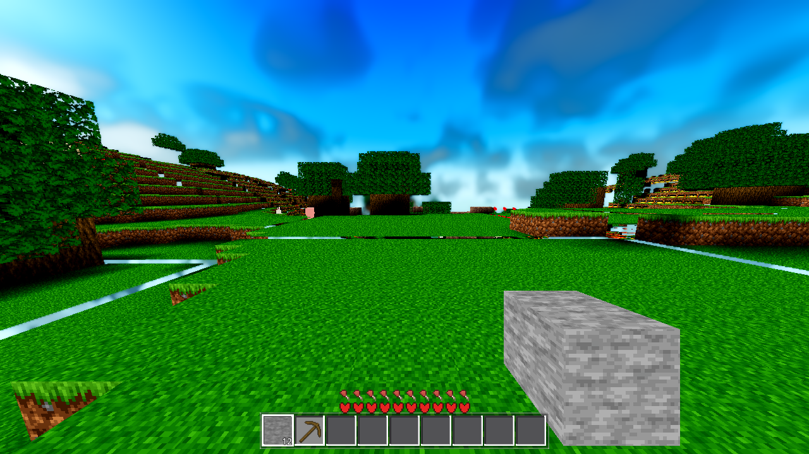
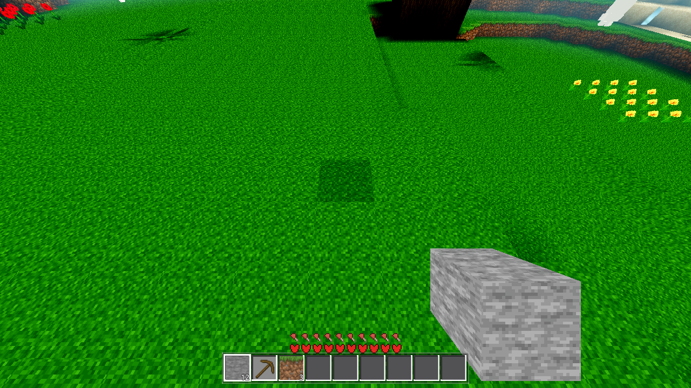

Verdict: the defect is real, the root cause is measured, the fix is verified. The ground-level frame that showed skybox slits along the chunk seams is now solid: every measured slit band reads 0 skybox pixels (before 5.6–24.2%), and the across-seam gap the probe measured at 552–558 mm is now a 654–1,290 mm overlap on all 9 seam pairs. All light gates green; the heavy set green except one pre-existing r50 failure (A/B-proven, follow-up ticket AC-0424 filed) and one gate crash that was mine and is fixed + re-verified.
A frame at ground level (default boot camera at spawn, facing +Z) shows what is behind the terrain along the chunk seams: pale-cyan slits (RGB ≈ 183,235,247 — the skybox) threading every seam crossing the view. The fog wall (332 m) cannot reach 16–30 m seams (refuted in the prior run). The probe measured the across-seam gap at terrain-top height: 552–558 mm at the x=16 seam (terrain tops 139–146 m); node transforms were verified against an independent Python replication of the placement math to the millimetre.
The per-column tangent-sheet placement (SphereMath.column_transform / C++ sm_column_transform, SEAM_FILL 1e-4 included) is gapless at the sheet base — the folded-net edge lines coincide to the AC-0362 1.6 mm grout — but the sheets' edge lines diverge with height: the neighbour's radial leans 16/R away from the own sheet's radial, so a V of width ≈ h·(16/R) opens at surface height h above the fold (≈ 0.4 m). Terrain tops sit h ≈ 140 m up → ~0.55 m see-through slit at every seam at ground level (0.5584 m at t = 140, i = 8, R = 4000 — the measured value). A line of sight aimed at the seam (a ~5.6° depression band) threads the V — its walls are the culled seam faces — out to the skybox. Cliff cases self-close (the cliff face catches the ray); the open case is roughly-flat terrain across the seam, the common one. AC-0307's close note documented the divergence as a "known physical consequence" covered by "AC-0042's hidden filler" — the filler is the flat-world one and never existed in the sphere placement, so nothing ever closed the V; the AC-0362 grout closed the sheet-plane footprint (vertical rays) only.
Extend the top-face edge rows (opaque merged + single-quad + fluid top) past the nominal 0..16 local footprint by the V width at the corner's own height, so the two sheets' top faces overlap across the seam and meet in the fold crease:
E(t, i) = K0[k][i] + K1[k]·t + SEAM_V_MARGIN (0.05 m), clamped [0, SEAM_V_MAX (2.5 m)]
k ∈ {0=W,1=E,2=S,3=N}, i = the along-edge cell, t = the corner's local height. K0/K1 come from the two columns' placed transforms (awesm::sm_column_transform — the math moved verbatim from gen.cpp into sphere_math_cpp.h, the single source of truth) and the neighbour's edge-column tops read per cell from the neighbour data already handed to build_accs (an all-air edge cell has no seam surface there → no V to fill). Per-cell tops = exact geometric values (no over-extension into the neighbour's solid). Top faces only — the merged path is guarded on fi == 2, the single-quad paths on fcv == FCV[2]; side faces stay on the exact seam plane (the unguarded first version extended side faces and the seamcensus caught it: 3 missing below-floor faces + 3,175 map anomalies + 89 winding-bad). Enabled by ctx["sphere_r"] = Game.planet_R on the home worker ctx template (world.gd, the three _tm_ctx build sites — the game builds through the C++ worker lane, not chunk.build_mesh) + the sync path (chunk.gd). The face-chunk path (build_mesh_face) and every hand-built arm ctx carry no key → sphere_r = 0 → all edges inactive → bit-identical to pre-AC-0423 (standing REF gates stay green; the face placement is the LSQ affine, a different mechanism).


Pixel census of the slit bands (pale-cyan skybox class, G,B > 200, B > R+10):
| band | BEFORE | AFTER |
|---|---|---|
| z16 left (200–400, 405–425) | 707 / 4,000 (17.7%) | 0 / 4,000 (0.0%) |
| xm16 diagonal (0–340, 520–545) | 475 / 8,500 (5.6%) | 0 / 8,500 (0.0%) |
| x16 right edge (1215–1280, 415–440) | 394 / 1,625 (24.2%) | 0 / 1,625 (0.0%) |
| whole mid-band (0–1280, 330–460, every 2nd px) | 1,240 / 83,200 | 0 / 83,200 |
Zooms: z16-left · xm16-diagonal · x16-right. Render: Forward+ / llvmpipe boot line present, rc=0, census clean; the SNAPDRAIN not fully drained after 600 frames cap fired — the documented 600-frame budget behaviour (the BEFORE shot used the same cap). The AFTER frame was captured with the pre-incident .so; the later .so rebuild (the meshprobe fix, §6) is byte-identical on the live ring path (genhash identical + probe + seamcensus re-verified, §7), so the frame remains valid evidence.
| gate | result | exit | log |
|---|---|---|---|
| G0 (headless load) | rc 0 · SCRIPT ERROR 0 / SHADER ERROR 0 | 0 | .scratch/AC-0423/g0-r5.log |
| genhash | 25 lines; (0,0) 46c20b07… = the standing AC-0311-P2 reference — bit-identical (proves the gen.cpp → header splice) | 0 | .scratch/AC-0423/genhash-r1.log (re-runs r3/r4 identical) |
| farab | ok · h_mismatch 0 · slab_cmp 1080/1080 · mat_pierce 0 | 0 | .scratch/AC-0423/farab-r1.log |
| ladder | ok · band_a 20/20 · band_b 144/144 · band_c 90/90 (self-consistent; A/B with the extension OFF is identical — the drift from the AC-0331 note 155/94 is PRE-EXISTING, §6) | 0 | .scratch/AC-0423/ladder-r1..r2.log + ladder-ab.log |
| seamcensus r4 | ok · missing_faces 0 on 64 seams / 393,216 rows · fixture 44/44 · map_anomalies 0 · winding_bad 0 — first actual run of the instrument (the arm had never run: three latent typed-null bugs, repaired + re-based for the extension, harness_data.yaml + HARNESS.md updated) | 0 | .scratch/AC-0423/seamcensus-r4.log (r5 post-rebuild identical) |
| ac0423probe (the ticket's probe) | ok · all 9 seam pairs: across-seam gap 0, ext_overlap 654–1,290 mm (was the 552–558 mm gap); ext_edge shows the top-face rows reaching 16.88/0.33/33.4 local (past the nominal 16/0 footprint) | 0 | .scratch/AC-0423/probe-r10.log (r9 pre-rebuild identical) |
| boundary r4 (×2, flake) | both ok · flap 196/105 · staged_dropped 2464/2580 (box-timing class, the AC-0384-verified band) | 0 | .scratch/AC-0423-gates/boundary_r4_1.log, boundary_r4_flake.log |
| genhash re-run (heavy job) | IDENTICAL to r1 | 0 | .scratch/AC-0423-gates/genhash.log |
| boundary r50 | ok false: marker_ok + remesh_ok false (crossings 20/20 — the walk completes) — A/B-PROVEN PRE-EXISTING (identical on the pre-AC-0423 native build), follow-up AC-0424 filed; not a regression, not a re-baseline | 0 | .scratch/AC-0423-gates/boundary_r50.log + boundary_r50-pre.log |
| meshprobe | first run: deterministic SIGSEGV (rc 134) — my code (two legacy-shape bugs in build_seam_ext), fixed + rebuilt + re-run ok · ac0211_ok true · compact_ok 32/32 (§6) | 134 → 0 | .scratch/AC-0423-gates/meshprobe.log (crash) → meshprobe-r3.log (pass) |
| full battery | rc 0 · all 6 arms RESULT green (player on_floor + sprint, interact place/mine/drop, light torch 0→9, fluids sea stable + lava 25, buckets scoop/place, genhash) | 0 | .scratch/AC-0423-gates/battery.log |
| shaderforce | 12/12 shaders ok · 0 failed | 0 | .scratch/AC-0423-gates/shaderforce.log |
| Windows build + serve | build rc 0 (post-fix rebuild, stamp 20261012-2211) · :8080/AweCraft.exe → 200 (the standing daemon serves exports/windows/ from disk) · :8081 → 200 (fresh daemon; :8080 is held by the standing one) · :5180 board answers GET | 0 | .scratch/AC-0423-gates/build_windows-r2.log |
Serve addresses: http://localhost:8080/AweCraft.exe and http://192.168.0.224:8080/AweCraft.exe (board http://192.168.0.224:5180/).
world._tm_ctx (which now carries sphere_r), and build_seam_ext had two legacy-shape bugs: (1) a dead legacy slab is an empty vector (slab_views starts empty) — .data() == nullptr → the deref (the AC-0403 unguarded-read family, reintroduced); (2) the top scan indexed the 4096-B full slab with the 256-B ring formula (y_in*16+t) — the wrong cells. Fix: the shape discriminant nd[k][0].size()==256 (the build_snap_data canonical), per-slab empty-skip, full-slab index y*256 + a_edge*16 + i. Rebuilt → meshprobe green; re-verified on the new .so: genhash identical, probe all seams closed, seamcensus identical (the ring path is byte-identical — the fix only touches the legacy shape + the null guard). 3/3 pre-fix runs crashed at the same offset; the post-fix run is clean.ok/marker_ok/remesh_ok false, built_final 246 vs 233, walk 20.33 s vs 20.35 s). The r4 twin of the same arm passes both runs. Follow-up ticket AC-0424 filed (open, p2, unqueued) with the repro + the three unverified suspects (3,000-frame re-entry budget vs r50 dispatch volume; genuine edit loss through free→regenerate at r50; ok-formula conflating partial build with edit loss).var q: Array = _seamc_quad(...) bugs — the function is designed to return null) — repaired + re-based in this task (harness_data.yaml row + HARNESS.md re-rendered); its first actual run is the post-fix r4 result above, with an A/B (extension off) that stays clean, so the instrument is proven on pre-fix geometry too.sphere_r key contract (bit-identical face meshes — the genhash + REF gates prove it).| file | change |
|---|---|
gdext/src/sphere_math_cpp.h (new) | the awesm column-placement math, moved verbatim from gen.cpp (single source of truth for gen + mesh). |
gdext/src/gen.cpp | splice to the header (genhash bit-identical). |
gdext/src/mesh.cpp | SeamExt + seam_ext_at + seam_ext_corner + build_seam_ext (both neighbour shapes, null-safe); ctx.sphere_r; the top-face-only hooks in the emitters. |
godot/world/world.gd | _tm_ctx["sphere_r"] = float(Game.planet_R) at the three worker-ctx build sites. |
godot/world/chunk.gd | the sync path key. |
godot/scenes/harness.gd | ac0423probe arm (temp — out at closeout) + seamcensus repair/rebase. |
tasks/harness_data.yaml + godot/HARNESS.md | seamcensus row (rebase + first-run note), re-rendered. |
godot/ARCHITECTURE.md | §4 mesh.cpp lane row + the per-column placement bullet (the V-crack class corrected: it was open, now closed by the seam-V extension). |
tasks/AC-0423/ | plan.html, this page, continuity.md, captures/ (before/after + zooms). |